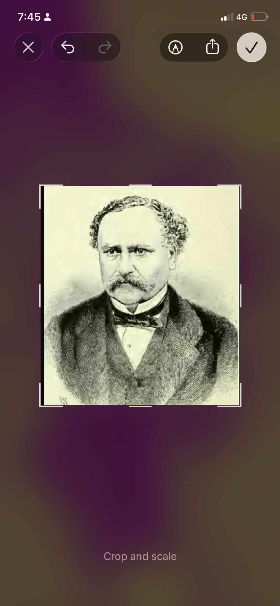

Why this tree matters
This page begins as a record of the attempt to obtain formal recognition and protection for the oak. The purpose is not to begin with a conclusion about its legal status, age or origin, but to assemble the evidence needed to understand the tree in its historical landscape.
The protection effort
The oak stands within a landscape shaped by the historic Borek industrial complex, the Zbiroh railway station and later road infrastructure. The archive is documenting correspondence, photographs, measurements and historical material connected with efforts to have the tree formally recognised and protected.
The central questions include the tree's approximate age; whether it predates major modern road works; how the surrounding route and land changed over time; whether earlier planning decisions deliberately preserved it; and which Czech heritage or nature-protection mechanism is the appropriate route for long-term protection.
Evidence being assembled
The working record will bring together present-day photographs, trunk measurements, historical and cadastral maps, road-construction records, aerial imagery, correspondence with public authorities and conservation specialists, and any local memories or documentary references concerning the tree.
Where evidence is incomplete, the page will say so. Historical interpretation will be kept separate from confirmed administrative or archival facts.
Connection to the wider archive
The oak is not being treated as an isolated natural object. Its significance may also lie in the continuity of the surrounding landscape: Borek industry, Kařez, the old Zbiroh station, the Prague–Plzeň transport corridor and the successive changes imposed on this area.
Contribute evidence
If you know the history of this oak, have older photographs, maps, memories of the road before reconstruction, documents, measurements or information relevant to its protection, you can send it directly to the archive. Name and email are optional.